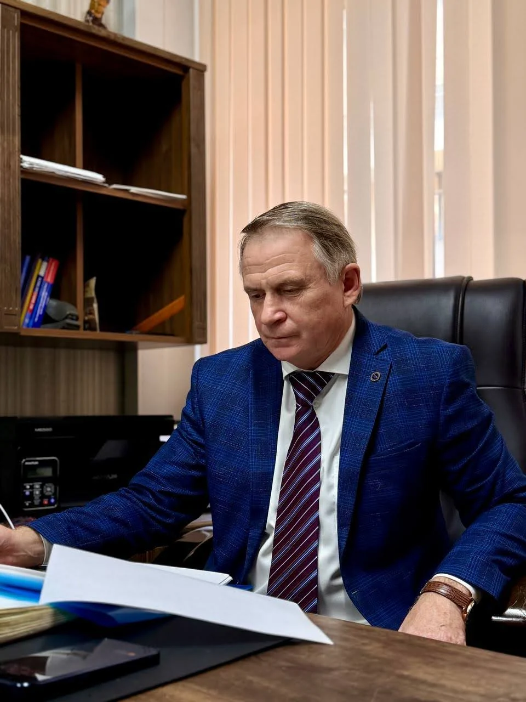
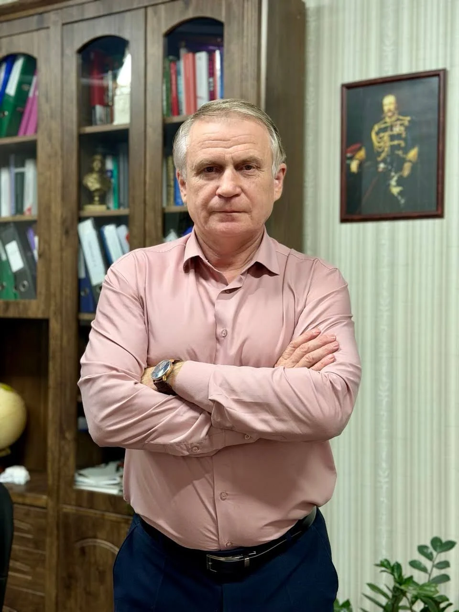
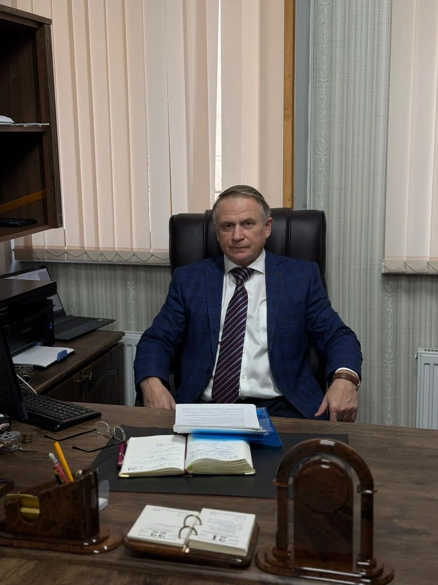
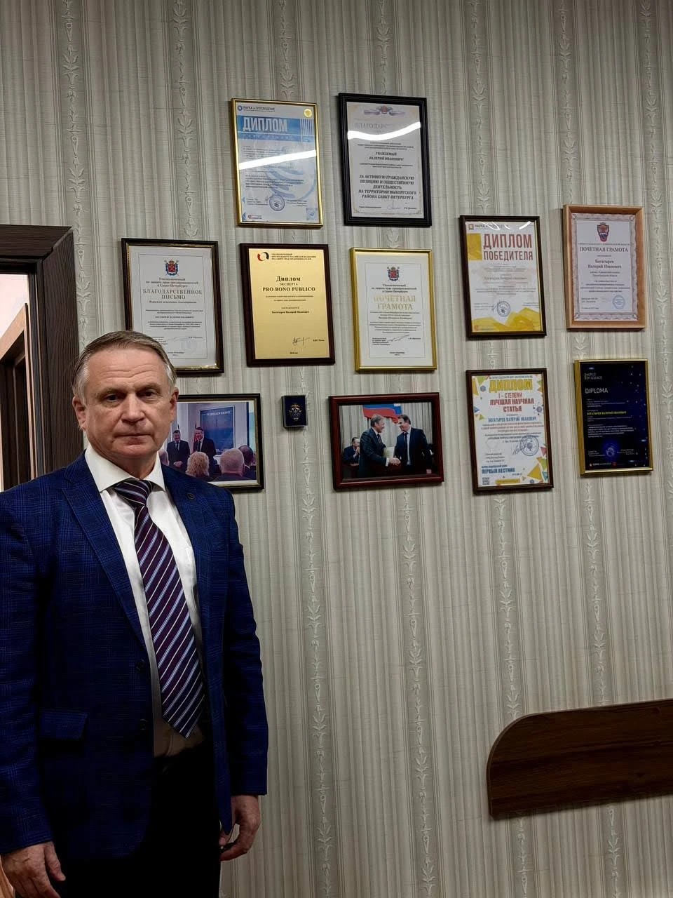

Три высших образования
Моё образование объединяет три направления: инженерное, юридическое и экономическое.
Адвокатское бюро
Профессиональная юридическая помощь. Защита ваших прав и интересов.
30 лет профессионального опыта
Получить консультациюВалерий Иванович Богатырев
В основе моей работы — добросовестность, профессионализм и личная ответственность перед доверителем.




Более 30 лет профессиональной деятельности
Каждое обращение для меня — это конкретная жизненная ситуация, требующая внимательного изучения и ясного плана действий.
Я опираюсь на профессиональные знания и практический опыт, чтобы защищать права и законные интересы доверителей. Считаю важным не только разобраться в правовой проблеме, но и объяснить возможные пути её решения, перспективы и риски.
«Даже если ситуация кажется безвыходной, её стоит обсудить. Вместе мы сможем определить возможные пути решения».
Моё образование объединяет три направления: инженерное, юридическое и экономическое.
Более 30 лет профессиональной деятельности. Служил в следственном аппарате МВД России. Работал советником Председателя Правления по правовым вопросам в ООО КБ «КрасБанк» и АО Банк «Советский».
Сопровождал арбитражные и гражданские споры, исполнительные производства и уголовные дела, представляя интересы банковских учреждений.
Много лет являюсь общественным представителем Уполномоченного по защите прав предпринимателей в Санкт-Петербурге А. В. Абросимова. Моя правозащитная деятельность отмечена грамотами и благодарностями, в том числе от Уполномоченного при Президенте РФ по защите прав предпринимателей Б. Ю. Титова.
Правовая оценка обстоятельств, документов и возможных способов защиты.
Защита на стадиях доследственной проверки, расследования и судебного разбирательства.
Правовая помощь по спорам о жилых помещениях и жилищных правах.
Урегулирование семейных споров с учётом прав и интересов сторон и детей.
Защита прав работников и работодателей в трудовых правоотношениях.
Защита прав при приобретении товаров, выполнении работ и оказании услуг.
Правовая помощь в спорах о собственности, обязательствах и имуществе.
Правовое сопровождение процедур несостоятельности с оценкой последствий.
Выберите направление, чтобы увидеть конкретные виды юридической помощи.
Проведения переговоров со сторонами семейного спора, разрешение конфликтов
Участие в судебном заседании по делу в сфере семейных правоотношений с предварительным изучением материалов дела, их анализом, формированием правовой позиции
Подготовка иска о разводе, разделе имущества, определения места жительства несовершеннолетних детей с получением правоустанавливающих документов, анализом правовой ситуации, консультированием
Защита адвокатом по уголовному делу, включающая в себя весь комплекс процессуальных действий, сопровождение в ходе следственных мероприятий и на судебных заседаниях, изучение материалов дела и их анализ, составление жалоб, обращений и ходатайств
Подготовка заявлений о преступлениях, обращений по вопросам уголовного судопроизводства, жалоб о несогласии с процессуальными действиями, ходатайств о реализации предусмотренных законом прав в ходе расследования уголовных дел
Личное сопровождение доверителя адвокатом бюро в ходе допроса (опроса) и иного следственного действия
Участие в судебном заседании по арбитражному делу с предварительным изучением материалов дела, их анализом, формированием правовой позиции
Подготовка иска по арбитражному делу с предварительным изучением документов доверителя, их анализом, формированием правовой позиции
Участие в судебном заседании по гражданскому делу с предварительным изучением материалов дела, их анализом, формированием правовой позиции
Подготовка иска по гражданскому делу с предварительным изучением документов доверителя, их анализом, формированием правовой позиции
Правовое сопровождение банкротства физических лиц
Огромное спасибо Валерию Ивановичу за помощь!
Работаем с данной компанией около года! Жилищный комплекс находится под надёжной охраной, опытные сотрудники подготовлены и проверены. Всё чётко и по делу. Обязательства, прописанные в договоре, выполняются в полном объёме.\nРуководство ТСЖ.
Солидная компания
Обращались за паспортом безопасности. Благодарим за качественно выполненную работу. Специалисты как вы на вес золота!!! Быстро, качественно, профессионально. Индивидуальный подход и полное погружение в задачу. Специалисты дали пояснения по каждому пункту, педантичность в каждом пункте просто зашкаливает. Спасибо вам Большое! Мы к вам ещё обратимся. Удачи вам!
Заказывали паспорт безопасности и акт категорирования для спорткомплекса. Созвонились с Валерием Ивановичем, получили консультацию очень подробно и доступно, договорились о составлении акта и паспорта. сделали все очень быстро, что очень важно было для нас так как горели сроки, и качественно- у проверяющих органов не было ни одного замечания, все приняли с первого раза. Финальная цена полностью соответствовала заявленной. Работа была выполнена качественно. Всем рекомендую, сами будем еще обращаться!
Хочу выразить благодарность адвокатскому бюро за профессиональную помощь в сопровождении моего бизнеса. Юристы оперативно помогли с регистрацией компании и грамотным оформлением всех документов, учитывая все нюансы. Их советы и поддержка сделали процесс максимально простым - за что огромное спасибо. Не пришлось вникать в огромную кипу документации. Рекомендую это бюро всем предпринимателям, которым нужна надежная юридическая поддержка!
Хочу выразить благодарность за вашу профессиональную помощь и поддержку в ходе разрешения моего дела. Идея с назначением экспертизы мне в голову даже не пришла. Спасибо за то, что помогали действительно на совесть. Ваши рекомендации и советы были неоценимы! Уверена, что в будущем при необходимости снова обращусь именно к вам.
Обращалась в Ноталекс и осталась полностью удовлетворена их работой! Квалификация специалистов на высшем уровне! Спасибо Вам огромное.
Хочу выразить свою признательность за вашу помощь в моем деле. Я была впечатлена вашими знаниями и вниманием к деталям. Вы сделали все как нужно! Спасибо за ваш труд!
Спасибо за помощь! Грамотные специалисты!
Прямой контакт
Телефон, WhatsApp, Telegram и адрес для связи.